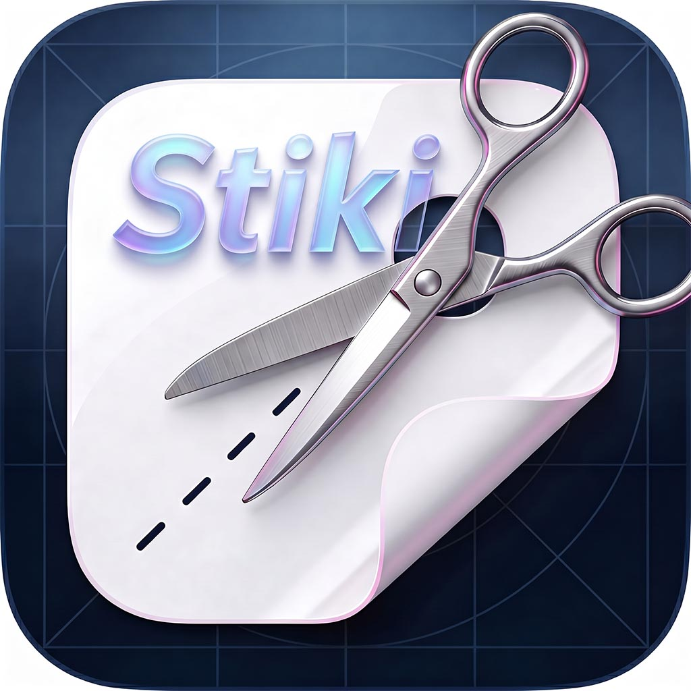

Stiki · Sticker Maker & Packs
Bring your photos to life as clean, transparent stickers—then dress them up with layers of text and emoji, organise everything into tidy packs and drop them into the chats where you spend your day.
Stiki in one line. Design stickers that stay sharp when you pinch‑zoom, peel off clean transparency, and survive the everyday flow of WhatsApp, Telegram and Messages—without juggling half a dozen workarounds.
The workflow creative people actually use
Pull in a crisp photo—from camera roll or a fresh capture. Cut the subject cleanly (smart assist when you’d rather swipe than scribble manual masks). Composite on canvas: reposition, reorder layers, tweak until it feels unmistakably yours. Push to standalone stickers or tuck into a curated pack—you choose the storyline.
What you can make
Transparent PNG stickers built for real keyboards—not flattened, muddy exports.
Crop a subject, dial in typography, tuck in playful emoji stacks—all on one canvas.
Packs (“albums”) keep commissions, meme sets and sticker drops separate—export when you’re ready.
Guidance for adding stickers to WhatsApp packs, Telegram import flows and the Messages sticker drawer—the wiring, handled for you.
Step by step
Bring in a crisp photo from your library or capture a new shot.
Isolate the subject with assisted tools when you want speed over hand-drawn masks.
Work on canvas: move layers, reorder, refine until the result feels right.
Save as standalone stickers or place them into a pack you curate for each project.
Why Stiki feels different
Privacy
How Stiki handles photos, local projects, analytics and optional system features is documented in one place.
Read privacy policyWe're here for you
Have a question, suggestion, or found something that does not look right? Send a message and we will reply as soon as we can.